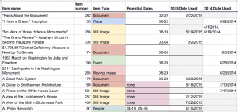
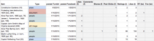

Written by Project Manager Megan Brett and Project Associate Jannelle Legg
Before the beta launch of Histories, the outreach team developed a social media plan that would reach audiences not walking on the Mall, and to encourage use of the project as a historical resource.
First, the team needed to select appropriate platforms for reaching different audiences. Resources from the Pew Research Center, and discussions with social media managers at cultural heritage organizations informed the team’s decisions based on the user bases and ease of managing postings to Facebook, Twitter, tumblr, Pinterest, and Instagram. Rather than having a presence on every leading social media platform, which seemed unmanageable, the outreach team decided to limit the outreach efforts to three networks. We wanted to target different demographics through different platforms, and selected Facebook, Twitter, and tumblr.
The average user of Facebook is trending older, and through those users we expected to reach history enthusiasts, retirees, and parents or grandparents organizing family outings to Washington, DC. On Twitter, there is a strong network of scholars, cultural heritage institutions, and students who would be interested in the historical content and the project’s development. The smallest of the networks, tumblr, attracts a community of millennials interested in many different historical topics and time periods that offered potential for reaching a younger user base than Twitter and Facebook. Pinterest and Instagram are used heavily by cultural heritage institutions for showcasing items in their own collections, but we found it is difficult to share the narrative-driven Explorations on those platforms. Additionally, the interface of Pinterest makes it difficult to preserve original source citations, since the emphasis is with sharing an image and the user’s notes. Instagram is growing quickly as a popular mobile-based social network, but content must be uploaded from a mobile phone and cannot be scheduled in advance. Content team members were already familiar with tumblr, Twitter, and Facebook, allowing us to focus our attention on scheduling content, rather than learning new platforms.
Prior to launching the social media campaign, the outreach team created accounts and handles on each platform. Rather than using the full project title, “Histories of the National Mall,” as the username or handle, we settled on the condensed “mallhistories” for each network: Twitter (@MallHistories); Facebook (https://www.facebook.com/mallhistories); and tumblr (http://mallhistories.tumblr.com/). Once the accounts were created, we posted one item on each social media network everyday, from March 2014 through the end of the official grant period on August 31, 2015.
We decided to post on these platforms daily, which is a demanding schedule for a small team. Since we had more than enough content to sustain daily postings for over a year, we thought this effort was worthwhile. Moreover, such a schedule would allow us to achieve a certain amount of visibility in algorithm-driven Facebook feeds or the timelines of tumblr users. Posting daily gave us a better chance of being noticed by users than a weekly post, which may have been hidden or buried in these platforms. Plus, daily posts allowed the team to circulate and highlight all of the site’s content, at least once, over the course of the grant.
The team responsible for posting and tracking social media interactions included two project associates who shared these responsibilities.
Social Media Management
We quickly found that organization was a key component to managing daily posts on social media. We were dealing with a sizable collection of items on the site and recognized that we needed to develop a system for looking across potential content quickly and efficiently to identify what to feature on Facebook, Twitter and tumblr. We were also sharing these responsibilities between project associates and needed to work in a collaborative space. To satisfy these concerns we determined that a shared Google Sheets worksheet was the best solution.
We developed a document that contained multiple sheets: one sheet tracked item types, another tracked all public items in the site, and a third sheet tracked our social media activities.
{kind=link}
This organization provided the space for us to track what and when we would be posting on social media. It encouraged us to be thoughtful about each post and allowed us to develop balanced and timely posts that represented the breadth and depth of the Histories project. This structure also ensured that new items could be added easily as the project content expanded over time.
{kind=link}

We developed systems for highlighting certain features across these sheets. Using field highlighting and italics, for instance, we were able to communicate between schedulers about possible upcoming posts and draw attention to items that had not been used. Using the sort and find functions of Google Sheets also made it possible to navigate and locate content matching a specific criteria. This practice made it possible to look across the entire site, to evaluate multiple items, and be thoughtful about when we should post them.
{kind=link}

Our scheduling sheet also provided a space to evaluate and track the social media responses. Using additional columns, we differentiated between platforms and types of engagement, and made note of particularly effective posts.
Content Strategy
The differences between social media platforms encouraged us to be thoughtful about how to best represent content from Histories. Each platform handles content differently and we needed to develop a standardized way of producing posts. Our priority was to drive visitors to the Histories site, so it was essential that the posts linked back to the site. We also wanted to avoid passively circulating content, and instead chose to incorporate framing text that would make social media posts relevant and interesting.
Each post followed the same basic template, which included a lead, photo, and the shared item’s description. These posts appeared differently across the social media platforms. Rather than create three different posts per day, we opted for continuity, and worked within the constraints of the various platforms.
For instance, as you can see in the above image, on tumblr (center) we took advantage of the hyperlinking function and linked readers to both the item and the site, using the phrase “ Learn more at Histories of the National Mall.” (“Learn more” was linked to the specific item, while “Histories of the National Mall” was linked to the homepage.) On Facebook (left) posts were automatically linked to the item, but we were unable to link to other content on the site as Facebook’s posts do not allow hyperlinked content from text.
The character limit imposed by Twitter meant that we could not provide the same meta-commentary that was possible with Facebook and tumblr. Rather than linking straight to the site, we opted to push posts from tumblr to twitter. Clicking the link in the tweet took users to the tumblr posts, allowing our readers to learn more and provide them with some of the longer form context available without a character limit.
Tumblr also makes use of tags to organize and connect content. While Twitter exposes visitors to new content in chronological order and Facebook uses a proprietary algorithm, visibility on tumblr required a concerted effort by the social media team to tag names, events, places and other relevant information to link our content to discussions. We also incorporated popular tags like, “On this day in history” or “history” to tap into users already following those specific tags. By linking to and tagging other institutions in posts, mallhistory.org connected with social media teams at Smithsonian Institutional Archives and DC Public Library.
This meta-commentary was an important component of our media strategy. We crafted lead-ins with a conversational tone, using friendly wording and humor to highlight the importance of each day’s post. Our aim was not to hide content behind attractive headlines, but rather to draw out interesting details and to demonstrate how the history described in that item was meaningful or relevant. We introduced the item in one or two sentences in the following ways:
- Highlighting the connection: We tried to consistently identify why each item was posted. For example: “For the opening day of Major League Baseball, check out this great picture of Senator Pepper playing baseball with Congressional pages in 1924!”
- Making it personal: We attempted to pull readers into our content by asking questions. Frequently the lead-ins included phrases like, “did you know…?,” “would you like…?,” “have you seen..?,” or “can you imagine…?”
- Emphasizing the timing : Posts were often relevant because they highlighted an anniversary of a significant event or birthday of a Mall-related personality. We made these connections explicit by adding contextualizing text like; “today,” “this week,” “this month,” “x years ago.”
- Highlighting the weird: We often introduced content by highlighting something surprising about the person, place, or past event. We tried to highlight a feature that someone might have overlooked, as with this example: “Did you know that on March 31, 1833, arsonists destroyed the Treasury Department?”
The pressure of a daily posting schedule posed a consistent challenge to our efforts to produce timely content. We were constantly seeking out opportunities to connect the content on mallhistory.org with current events, local holidays, celebrations, and activities. For example, the reintroduction of American bison to the National Zoo had not been widely announced, but because the news broke early in the day, we were able to swap out the scheduled posts for the “Bison Behind the Smithsonian Building” item. This post was very popular that day and circulated widely during the following week.
Occasionally, current events prompted the creation of new content in the site as well. For example, when a gyrocopter landed on the US Capitol lawn on April 15, 2015, the content and outreach team returned to the project’s research collections to feature other landings on the Mall, and discovered evidence of autogiro landings on the Mall in 1928 and in 1931. By May 1, the content team had drafted two new Past Event items, and featured one of them on social media in the same month.
The planning, scheduling, and posting of daily content required a significant time commitment from team members. We organized postings in two week increments, rotating the duty of selecting, preparing, and scheduling posts. Dividing the work into 14-day periods allowed us to include thoughtful commentary. This time frame also permitted our team to monitor the engagement with posts on Facebook, Twitter and tumblr and record it in the sheet, as well as respond to feedback on social media or engage with some of the other cultural heritage institutions which we friended on the sites.
Social Media Sustainability
Following the project’s launch, daily sharing on social media drove traffic to mallhistory.org and was an integral part of the outreach strategy to bring content to different audiences. We designed the social media plan to last through the grant’s active funding cycle. The person-hours required to share and develop content daily cannot be supported without the grant’s funding. We have adjusted and shifted social media responsibility to a project associate who will spend a few hours each semester developing a modest schedule of postings to highlight mallhistory.org’s content for select anniversaries and birthdays. We will also share relevant content when significant current events prompt our attention.
Social Media for Visitors Using Mallhistory.org
{kind=link}
While the social media plan is targeted at users not on the Mall, we made it possible for users to connect with the project’s social media posts from the footer available on every page.
For tourists, and other users, wishing to share content with their social networks, each page has an AddThis bar available that links to the individual user’s social media accounts, or allows her to email something to herself or others to read at another time.
Social Media: Measuring Success
Success in social media can be evaluated by the number of likes, reblogs, shares, and comments that a post receives, and the number of followers for an account. Data that we have collected suggests that we succeeded in creating positive engagement with the site and developed a small but loyal following. On tumblr there was an additional mark of success. Certain tags on tumblr are managed by editors, who nominate the best of the tagged content, and “history” is a managed tag. A number of posts to our tumblr were nominated by editors, at least two of whom followed our blogs. Additionally, anecdotal feedback from friends and family of the project team indicated that even those posts which were not heavily “liked” were well received.